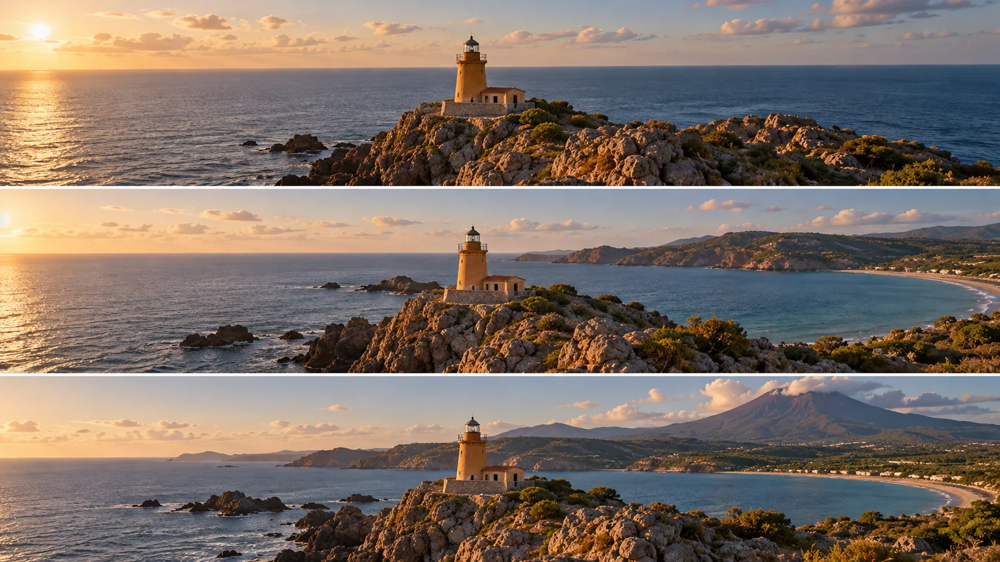

G15 · 중급 · 일반 드론
작은 등대를 기준으로 만과 화산 드러내기
시선 고정과 기체 이동을 분리하고 배경의 공개량에 맞춰 이동 방향을 설계한다.
그림에서 확인할 세 가지주대상 고정과 이동 방향은 별개의 선택이다.
1바다 앞의 등대
맨 위 등대는 가운데 놓이고 뒤로 단순한 바다가 보인다. 주제의 위치와 그 주변에 남은 빈 공간을 이후 장면의 기준으로 삼는다.
2오른쪽으로 열린 해안
가운데는 등대 뒤 오른쪽에 만과 해안선이 등장한다. 등대가 계속 중심에 남아도 배경을 통해 새 장소 정보가 추가되는 관계를 본다.
3등대 뒤에 나타난 산
맨 아래는 먼 산이 배경에 들어와 해안의 규모가 더 크게 읽힌다. 등대와 산의 겹침이 주제를 가리는지 맥락을 더하는지 비교한다.
촬영 설계
촬영을 이렇게 설계한다
주제를 기준으로 잡는다
제작자는 작은 등대를 화면의 기준으로 두고 주변 만과 산을 보여준다고 설명한다. 주제의 화면 위치를 유지하는 일과 필요한 배경을 찾는 이동을 따로 다루는 방식이다.
초기 움직임을 확인한다
본문은 추적이 시작된 직후 잠시 움직임이 튈 수 있다고 설명한다. 기능을 켠 순간부터 결과가 매끄럽다고 가정하지 않고 안정된 구간이 생긴 뒤 촬영을 시작하는 선택이다.
교육 적용 · 배경을 고른다
등대의 위치만 유지하면 충분한지 확인한다. 이동 중 배경의 산이 겹쳐 사라지거나 의미 없는 공간만 늘어난다면 방향과 높이를 조정해 드러낼 관계를 먼저 정한다.
작은 등대에 카메라를 맞춘 채 시칠리아의 만과 에트나 배경을 드러내는 시연이다.
원본 영상작은 등대를 기준으로 만과 화산 드러내기
1. 주제의 유지
원본 시연에서 지정한 대상이 화면의 관심 지점에 남는지 본다. 위치 유지와 대상 크기 고정을 구별한다.
2. 배경의 겹침
주제 뒤 해안이나 산이 어떻게 갈라지는지 관찰한다. 같은 주제를 유지하며 새로 얻은 정보가 무엇인지 판단한다.
3. 시작 구간의 안정
시연의 시작 직후에 화면이 튀거나 다시 정렬되는지 살핀다. 기능을 켜는 순간과 사용 가능한 촬영 구간을 구별한다.
재생이 제한되면 원본 영상 새 창을 이용하세요.
제작진 설명 · 한국어 요약 번역
Spotlight: 이동은 조종자가, 구도 유지는 카메라가
조작 분담
VicVideoPic은 Spotlight에서 두 스틱으로 이동하고 카메라는 선택한 대상을 같은 위치에 유지한다고 설명한다.
카메라가 비행 방향과 분리되어 있어 조종자는 이동에만 집중할 수 있다.
촬영 예시
작은 등대를 고정한 채 여러 방향으로 날아 뒤의 만과 에트나를 드러냈다.
작은 언덕을 두고 상승하며 배경의 만을 보여주는 예도 든다.
시작 시점
이동 시작 후 몇 초는 대상을 분석해 움직임이 튈 수 있다.
대상에 작은 박스가 나타나면 기록을 시작해 더 부드러운 영상을 얻는다.
제작진 설명 · 한국어 요약 번역
움직이는 대상 추적과 기능의 구분
대상 선택
조종기를 쓸 수 있을 때 움직이는 대상을 Spotlight로 따라가면 Active Track보다 자유롭다고 한다.
Subject Scanning은 사람, 차, 자전거를 인식해 선택하게 해 준다.
빠른 대상
빠르게 달리는 차는 잡기 어려워 속도가 줄 때까지 기다리거나 가까이 가라고 권한다.
적합 장면
테니스나 복싱 경기, 무대 공연처럼 한정된 공간의 피사체를 추천한다.
운전이나 걷기처럼 조종기를 쓸 수 없을 때는 Active Track의 영역이라고 구분한다.
화면 위치 유지가 피사체 크기나 배경 관계까지 보장하는 것은 아니다.
Kling 프롬프트단문 인과 체인 · 16:9
내가 직접 만들어 본다
카메라 시선은 등대에 고정하고 기체만 옆으로 옮겨, 등대 뒤의 배경이 새로 드러나게 한다.
- S01바다 절벽 위에 작은 흰 등대가 서 있다.
- S02등대는 화면 중앙에 놓여 있다.
- S03등대 뒤에는 단순한 바다와 수평선만 보인다.
- S04드론 시점은 등대 꼭대기보다 조금 높은 곳이다.
- S05맑은 오후의 햇빛이 등대의 왼쪽 면을 밝힌다.
- S06가로 16:9 화면에서 등대 양옆에 하늘과 바다가 넓게 남아 있다.
[네거티브]
- 등대가 여러 개로 늘어나거나 다른 건물이 생기는 것 금지
- 등대가 한쪽으로 치우치거나 화면 밖으로 밀려나는 것 금지
- 뒤 배경에 산, 섬, 배, 건물을 미리 보여 주는 것 금지
- 시점이 등대보다 훨씬 높아지거나 땅 높이로 내려오는 것 금지
- 빛이 반대편에서 오거나 밤처럼 어두워지는 것 금지
- 화면 비율이 세로나 정사각형으로 바뀌는 것 금지
- S01A small white lighthouse stands on a sea cliff.
- S02The lighthouse sits in the center of the frame.
- S03Behind it, only plain sea and the horizon are visible.
- S04The drone viewpoint is slightly higher than the top of the lighthouse.
- S05Clear afternoon sunlight lights the left side of the lighthouse.
- S06In the horizontal 16:9 frame, wide sky and sea remain on both sides of the lighthouse.
[Negative]
- Do not add more lighthouses or any other buildings.
- Do not let the lighthouse drift to one side or out of the frame.
- Do not show mountains, islands, ships, or buildings in the background yet.
- Do not make the viewpoint much higher than the lighthouse or drop to ground level.
- Do not make the light come from the other side or turn dark like night.
- Do not change the frame to vertical or square.
- S01영상은 첫 프레임의 구도에서 시작한다.
- S02카메라는 등대에 시선을 고정한다.
- S03그래서 등대는 끝까지 화면 중앙에 남는다.
- S04드론은 등대 왼쪽에서 오른쪽으로 천천히 옮겨 간다.
- S05드론의 위치가 바뀌기 때문에 등대 뒤의 배경이 달라진다.
- S06먼저 등대 뒤 오른쪽에서 만과 해안선이 나타난다.
- S07이동이 이어지자 해안선 너머의 큰 산이 등대 뒤로 들어온다.
- S08이동 속도는 일정하고 부드럽다.
- S09영상은 산이 등대 옆에 또렷하게 놓인 상태에서 끝난다.
- S10등대의 모양과 색, 바다의 색은 유지된다.
[네거티브]
- 첫 장면과 다른 구도나 장소에서 시작하는 것 금지
- 카메라가 등대에서 시선을 떼거나 다른 곳을 향하는 것 금지
- 등대가 중간에 화면 밖으로 사라지는 것 금지
- 드론이 위나 아래로 크게 움직이거나 급하게 방향을 바꾸는 것 금지
- 배경이 컷으로 갑자기 바뀌는 것 금지
- 만과 해안선이 한꺼번에 튀어나오거나 등대 앞을 가리는 것 금지
- 산이 등대를 가리거나 등대보다 가까워 보이는 것 금지
- 속도가 빨라지거나 흔들리는 것 금지
- 산이 등대와 겹쳐 등대가 보이지 않게 끝나는 것 금지
- 등대의 모양이나 색, 바다의 색이 바뀌는 것 금지
- S01The video starts from the composition of the first frame.
- S02The camera keeps its gaze fixed on the lighthouse.
- S03So the lighthouse stays in the center of the frame to the end.
- S04The drone moves slowly from the left of the lighthouse to the right.
- S05Because the drone's position changes, the background behind the lighthouse changes.
- S06First, a bay and a coastline appear behind the lighthouse on the right.
- S07As the move continues, a large mountain beyond the coastline comes in behind the lighthouse.
- S08The movement speed is steady and smooth.
- S09The video ends with the mountain clearly placed beside the lighthouse.
- S10The shape and color of the lighthouse and the color of the sea remain unchanged.
[Negative]
- Do not start from a different composition or place than the first frame.
- Do not let the camera look away from the lighthouse or toward anything else.
- Do not let the lighthouse leave the frame at any point.
- Do not make the drone move sharply up or down or change direction abruptly.
- Do not change the background with a sudden cut.
- Do not make the bay and coastline pop in at once or cover the front of the lighthouse.
- Do not let the mountain hide the lighthouse or look closer than it.
- Do not speed up or shake.
- Do not end with the mountain overlapping and hiding the lighthouse.
- Do not change the lighthouse's shape or color or the color of the sea.
- S01바다 앞에 작은 등대가 홀로 서 있다.
- S02영상은 하나의 연속 쇼트다.
- S03처음 10초 동안 등대 뒤에는 단순한 바다만 보인다.
- S04드론은 등대를 계속 바라보며 오른쪽으로 옮겨 간다.
- S05드론이 옮겨 가기 때문에 등대 뒤 배경이 달라진다.
- S06등대는 화면 중앙에 그대로 머문다.
- S07다음 10초 동안 등대 뒤 오른쪽에서 해안선이 나타난다.
- S08해안선이 이어져 큰 만이 열린다.
- S09마지막 10초 동안 만 너머로 먼 화산이 들어온다.
- S10화산은 등대 뒤에서 규모만 더한다.
- S11그 결과 등대는 같은 자리에서 새 장소를 소개한다.
- S12움직임은 처음부터 끝까지 부드럽게 이어진다.
[네거티브]
- 등대가 여러 개로 늘어나 주제가 흩어지는 것 금지
- 영상 중간에 컷이 들어가 장면이 끊기는 것 금지
- 처음부터 산과 해안이 가득 보이는 것 금지
- 드론이 등대를 놓치고 다른 곳을 바라보는 것 금지
- 배경이 그대로이고 등대만 움직이는 것 금지
- 등대가 화면 밖으로 밀려나는 것 금지
- 해안선이 왼쪽에서 나타나 방향이 어긋나는 것 금지
- 만이 열리지 못하고 바다만 계속 이어지는 것 금지
- 화산이 등대 앞쪽에 가깝게 놓이는 것 금지
- 화산이 등대 앞을 덮어 주제를 가리는 것 금지
- 등대가 자리를 옮겨 새 장소와 무관해지는 것 금지
- 시작 직후 화면이 한 번 튀듯 흔들리는 것 금지
- S01바다 절벽 위에 작은 흰 등대가 서 있다.
- S02등대는 화면 중앙에 놓여 있다.
- S03등대 뒤에는 단순한 바다와 수평선만 보인다.
- S04드론 시점은 등대 꼭대기보다 조금 높은 곳이다.
- S05맑은 오후의 햇빛이 등대의 왼쪽 면을 밝힌다.
- S06영상은 가로 16:9의 하나의 연속 쇼트다.
- S07처음 10초 동안 카메라는 거의 움직이지 않고 등대와 바다를 보여 준다.
- S08그래서 관객은 등대의 위치와 주변의 빈 공간을 먼저 기억한다.
- S09그다음 카메라는 등대에 시선을 고정한다.
- S10드론은 등대 왼쪽에서 오른쪽으로 아주 천천히 옮겨 가기 시작한다.
- S11드론의 위치가 바뀌기 때문에 등대 뒤의 배경이 달라진다.
- S1210초 무렵에 등대 뒤 오른쪽에서 만과 해안선이 나타난다.
- S13이동이 이어지자 해안선 너머의 큰 산이 등대 뒤로 들어온다.
- S14드론은 20초 무렵까지 같은 속도로 부드럽게 이동한다.
- S15등대는 이동하는 동안 내내 화면 중앙에서 크기를 유지한다.
- S16마지막 10초 동안 드론은 속도를 서서히 줄인다.
- S17그래서 산과 만과 등대가 한 화면에 안정적으로 놓인다.
- S18영상은 산이 등대 옆에 또렷하게 놓인 상태로 끝난다.
- S19등대의 모양과 색, 바다의 색은 처음부터 끝까지 유지된다.
[네거티브]
- 등대가 여러 개로 늘어나거나 다른 건물이 생기는 것 금지
- 등대가 한쪽으로 치우치거나 화면 밖으로 밀려나는 것 금지
- 뒤 배경에 산, 섬, 배, 건물을 미리 보여 주는 것 금지
- 시점이 등대보다 훨씬 높아지거나 땅 높이로 내려오는 것 금지
- 빛이 반대편에서 오거나 밤처럼 어두워지는 것 금지
- 여러 쇼트로 쪼개지거나 편집 컷이 들어가는 것 금지
- 처음 10초에 카메라나 드론이 크게 움직이는 것 금지
- 처음부터 만이나 산을 보여 주는 것 금지
- 카메라가 등대에서 시선을 떼는 것 금지
- 드론이 갑자기 빠르게 움직이는 것 금지
- 배경이 컷으로 갑자기 바뀌는 것 금지
- 10초 이전에 만이 나타나거나 10초 무렵에 컷으로 바뀌는 것 금지
- 산이 등대를 가리거나 등대보다 가까워 보이는 것 금지
- 속도가 중간에 빨라지거나 느려지는 것 금지
- 등대의 화면 크기가 커지거나 작아지는 것 금지
- 마지막 10초에 갑자기 멈추거나 급가속하는 것 금지
- 산, 만, 등대 중 하나가 화면 밖으로 잘리는 것 금지
- 산이 흐리게 뭉개지거나 등대와 떨어져 보이는 것 금지
- 등대의 모양이나 색, 바다의 색이 중간에 바뀌는 것 금지
- S01A small white lighthouse stands on a sea cliff.
- S02The lighthouse sits in the center of the frame.
- S03Behind it, only plain sea and the horizon are visible.
- S04The drone viewpoint is slightly higher than the top of the lighthouse.
- S05Clear afternoon sunlight lights the left side of the lighthouse.
- S06The video is one continuous shot in horizontal 16:9.
- S07For the first 10 seconds, the camera barely moves and shows the lighthouse and the sea.
- S08So the viewer first remembers the position of the lighthouse and the empty space around it.
- S09Then the camera fixes its gaze on the lighthouse.
- S10The drone begins to move very slowly from the left of the lighthouse to the right.
- S11Because the drone's position changes, the background behind the lighthouse changes.
- S12Around 10 seconds, a bay and a coastline appear behind the lighthouse on the right.
- S13As the move continues, a large mountain beyond the coastline comes in behind the lighthouse.
- S14Until around 20 seconds, the drone keeps moving smoothly at the same speed.
- S15The lighthouse keeps its size in the center of the frame throughout the move.
- S16During the last 10 seconds, the drone gradually slows down.
- S17So the mountain, the bay, and the lighthouse settle steadily in one frame.
- S18The video ends with the mountain clearly placed beside the lighthouse.
- S19The shape and color of the lighthouse and the color of the sea remain unchanged from start to finish.
[Negative]
- Do not add more lighthouses or any other buildings.
- Do not let the lighthouse drift to one side or out of the frame.
- Do not show mountains, islands, ships, or buildings in the background yet.
- Do not make the viewpoint much higher than the lighthouse or drop to ground level.
- Do not make the light come from the other side or turn dark like night.
- Do not split into several shots or add edit cuts.
- Do not make the camera or drone move much in the first 10 seconds.
- Do not show the bay or the mountain from the start.
- Do not let the camera look away from the lighthouse.
- Do not make the drone start moving fast.
- Do not change the background with a sudden cut.
- Do not show the bay before 10 seconds or cut to it around 10 seconds.
- Do not let the mountain hide the lighthouse or look closer than it.
- Do not speed up or slow down midway.
- Do not let the lighthouse grow or shrink in the frame.
- Do not stop suddenly or accelerate sharply in the last 10 seconds.
- Do not cut off the mountain, the bay, or the lighthouse at the frame edge.
- Do not blur the mountain or make it look detached from the lighthouse.
- Do not change the lighthouse's shape or color or the sea's color at any point.
결과에서 볼 것
- 등대가 처음부터 끝까지 화면 중앙에 남았는가
- 만과 산이 등대 뒤에서 순서대로 나타났는가
- 등대의 크기와 모양이 중간에 바뀌지 않았는가